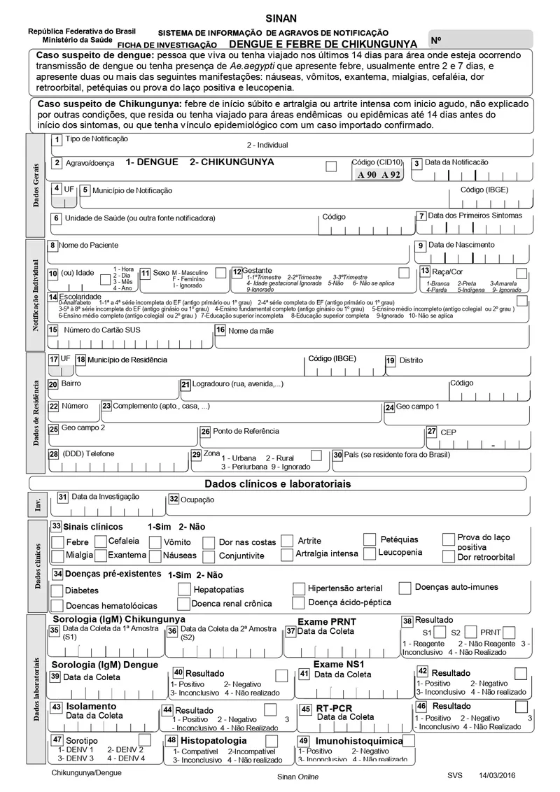
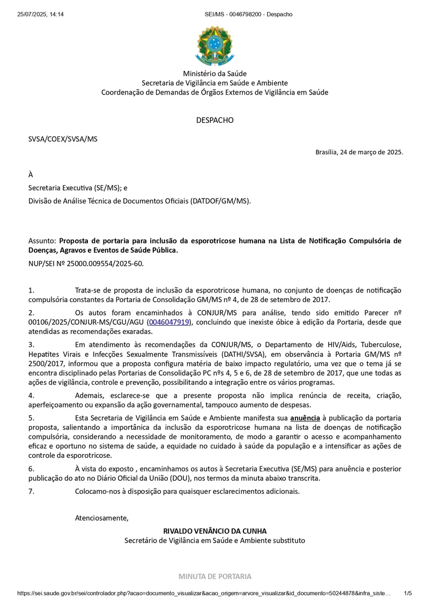
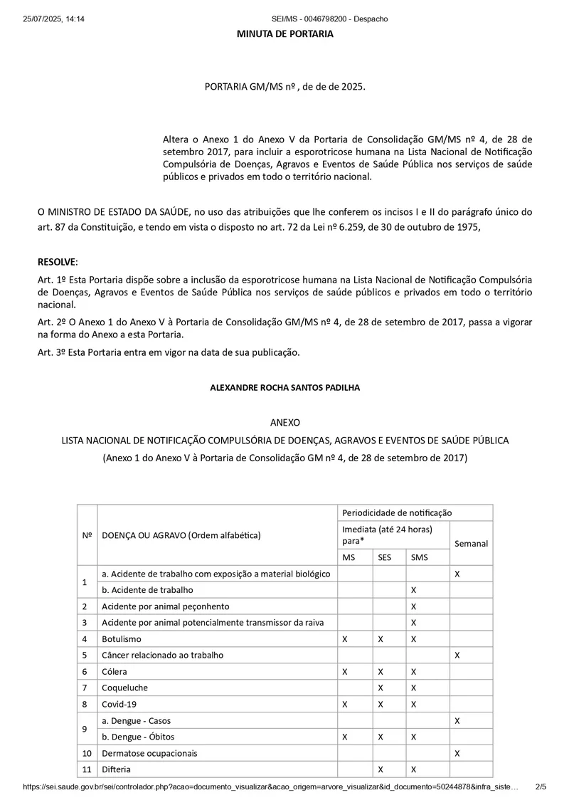
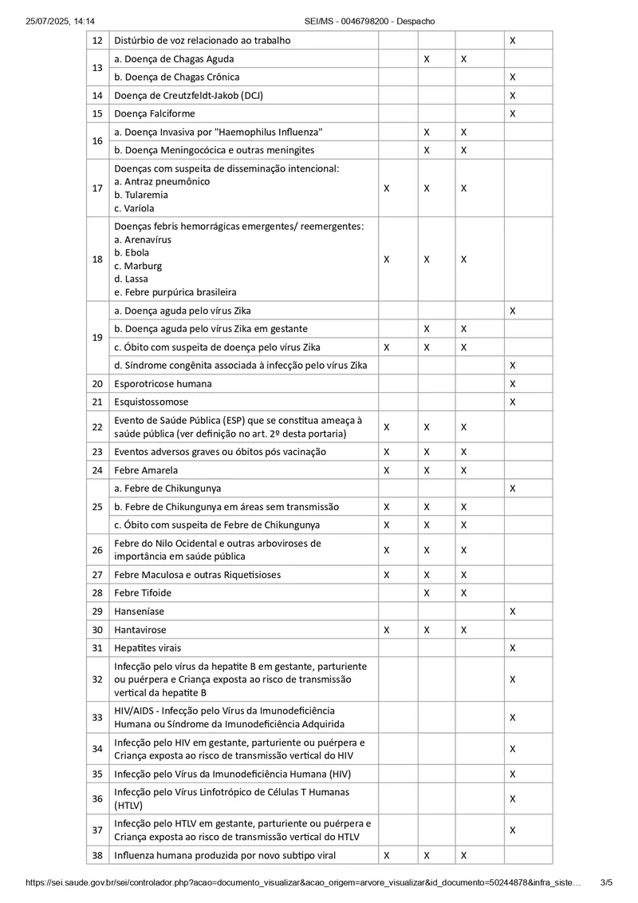
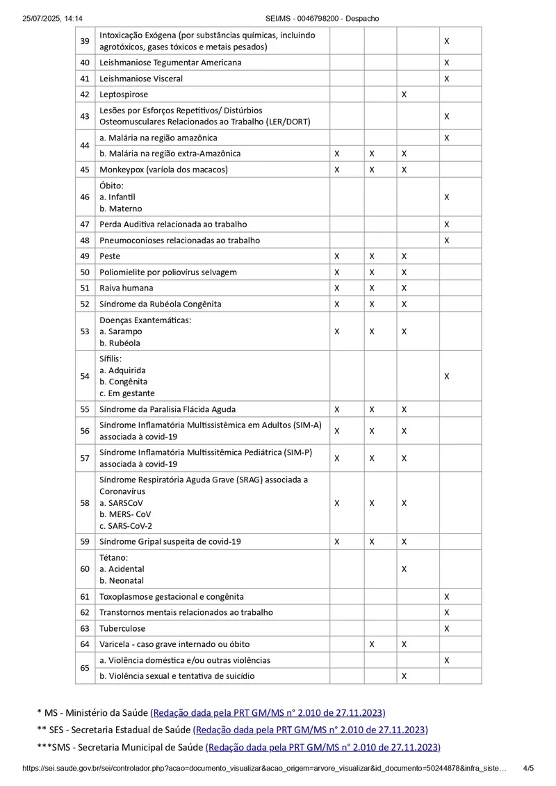

Het SINAN (Informatiesysteem voor meldingsplichtige ziekten) werd in 1975 opgericht en in 1990 opgenomen in het SUS (Geïntegreerd Gezondheidssysteem). Het belangrijkste doel is het uitschakelen en monitoren van ziekten en het aanbieden van meldingen, zodat informatie de gezondheidsautoriteiten snel worden bereikt voor epidemiologische surveillance. De meldingstermijn kan afhankelijk zijn van de aandoening, van 24 uur voor foutre gevallen tot maximaal 7 dagen voor andere gevallen. Gegevensverzameling vindt plaats met behulp van een meldingsformulier, dat eerst op papier wordt ingevuld en vervolgens in het computersysteem wordt afgerond. Dit formulier mogelijke diverse essentiegegevens over de patiënt in de aandoening, zoals: leeftijd, burgerlijke staat, adres, woonplaats, datum van het begin van de symptomatische, klinische verloop, extreme behandeling, follow-up in uitsluiting van het dossier, naast andere gegevens die relevant zijn voor het epidemiologisch onderzoek.

is het gemaakt?
In 1975.
Wie vult het SINAN-formulier in?
Zorgprofessionals, zoals artsen, verpleegkundigen, verpleegassistenten, tandartsen en anderen zijn betrokken bij deze meldingstaak (SINAN). De betrokkenheid van meerdere zorgprofessionals zorgt voor grondig toezicht, waardoor wordt voorkomen dat meldingsplichtige ziekten onopgemerkt blijven en de schuldenaar gealarmeerd worden.
Waarom direct en tweemaal (via een tussenperiode)?
Bepaalde ziekten in Brazilië – vooral die welke als uitgeroeid werden beschouwd of nog maar weinig voorkomen, zoals pokken of polio – verplichte onmiddellijke aandacht. Wanneer een ziekte die als uitgeroeid werd opnieuw opduikt (nieuwe gevallen), is dit een waarschuwingssignaal voor de gezondheidsautoriteiten.
Polio werd bijvoorbeeld in 1989 in Brazilië uitgeroeid dankzij vaccinatiecampagnes voor kinderen. Daarom roept een melding in het SINAN-systeem op over een mogelijk geval van polio directe vragen op: Is het kind niet gevaccineerd? Gaat het om een geïmporteerd geval (uit een ander land)? Zou er sprake kunnen zijn van een nieuwe virusvariant? Om deze redenen wordt polio beschouwd als een ziekte die onmiddellijk gemeld moet worden.
Een ander belangrijk criterium is de mate van virulentie en ernst van de ziekte. Ziekten met een hoog risico op overdracht of een hoge mortaliteit moeten ook binnen 24 uur worden gemeld. Ziekten met een hoge prevalentie, voortdurende circulatie waar de bevolking ook is en een laag mortaliteitsrisico worden doorgaans systematisch als vertraagde meldingen en kunnen binnen zeven dagen worden gemeld.
Hoeveel meldingen van ziekten, verwondingen en incidenten zijn er?
Het aantal meldingen is afhankelijk van hoe de lijst wordt opgenomen. Dit komt gepaard met ziekten meerdere klinische vormen of specifieke situaties kennen die ziekten voorkomen. HIV wordt bijvoorbeeld beschouwd als een ziekte met een uitgestelde (wekelijkse) meldingsplicht. In de verordening van het Ministerie van Volksgezondheid is HIV echter onmogelijk in vier categorieën, zoals: HIV-infectie, HIV bij zwangere vrouwen, aids en specifieke situaties gerelateerd aan de infectie. Effectieve gevolgen voor syfilis moeten worden gemeld op basis van de vorm waarin deze zich manifesteert: verworven syfilis, syfilis bij zwangere vrouwen en aangeboren syfilis.
Om de reden moeten mannen niet alleen het aantal ziekten tellen, maar ook de omstandigheden en contexten waarin elke ziekte zich manifesteert. De meest recente verordening van het Ministerie van Volksgezondheid (2025) somt 65 ziekten, gezondheidsproblemen en gebeurtenissen op die meldingsplichtig zijn. Wanneer echter alle onderverdelingen worden meegerekend, kan het totaal oplopen tot bijna 100 meldingsplichtige categorieën.




Wat is de rol van de verpleegkunde bij de meldingsplicht?
Door het directe contact met patiënten en de verplichte tijd zij aan patiëntenzorg aanbevolen, zijn verpleegkundigen vaak betrokken bij het observeren en rapporteren van ziekten en gezondheidsproblemen. Verpleegkundigen in triagekamers op de spoedeisende hulp vullen bijvoorbeeld bijna dagelijks een SINAN-formulier in.
Wat zijn de gevolgen van de meldingsplicht?
De meldingsplicht speelt een fundamentele rol in de volksgezondheid. Via SINAN (Nationaal Meldingsstelsel voor Ziekten) is het mogelijk om het voorkomen van ziekten en gezondheidsproblemen te monitoren, uitbraken te bepalen, preventieve maatregelen te nemen en systematisch overheidsbeleid te ondersteunen. Deze gegevens maken ook de ontwikkeling van bestrijdingsplannen voor endemische ziekten mogelijk, daarnaast de evaluatie van de krachtige van gezondheidsinterventies en de productie van betrouwbare statistieken voor regionale en temporele vergelijkingen. Op deze manier draagt het systeem bij de planning van doelstellingen en strategische besluitvorming binnen de volksgezondheid.
Bekijk welke ziekten, gebeurtenissen en gezondheidsproblemen er zijn:
https://www.calculadorasdeenfermagem.com.br/notificacao-compulsoria.html